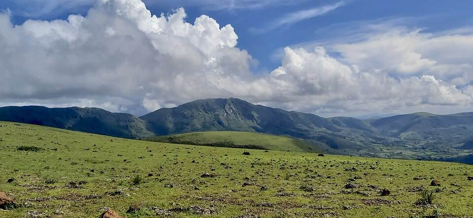
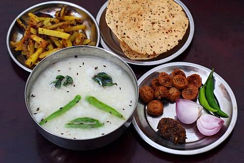
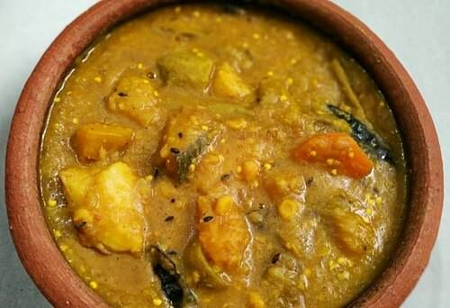
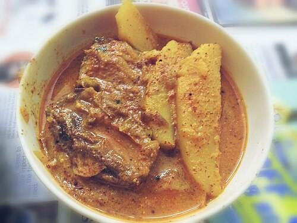
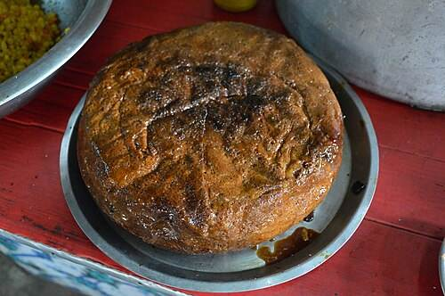
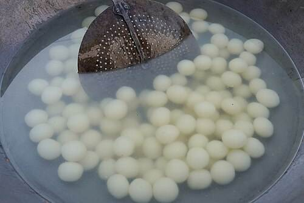
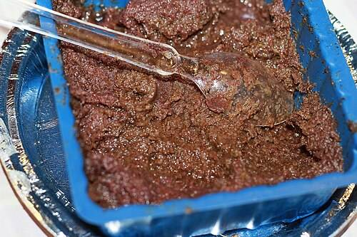
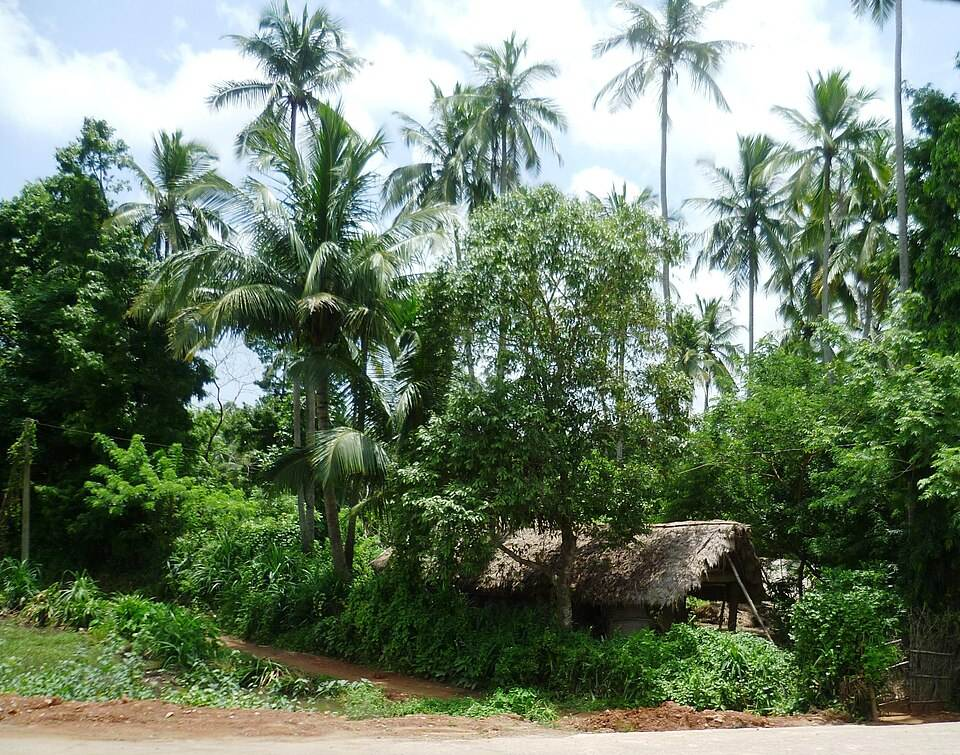
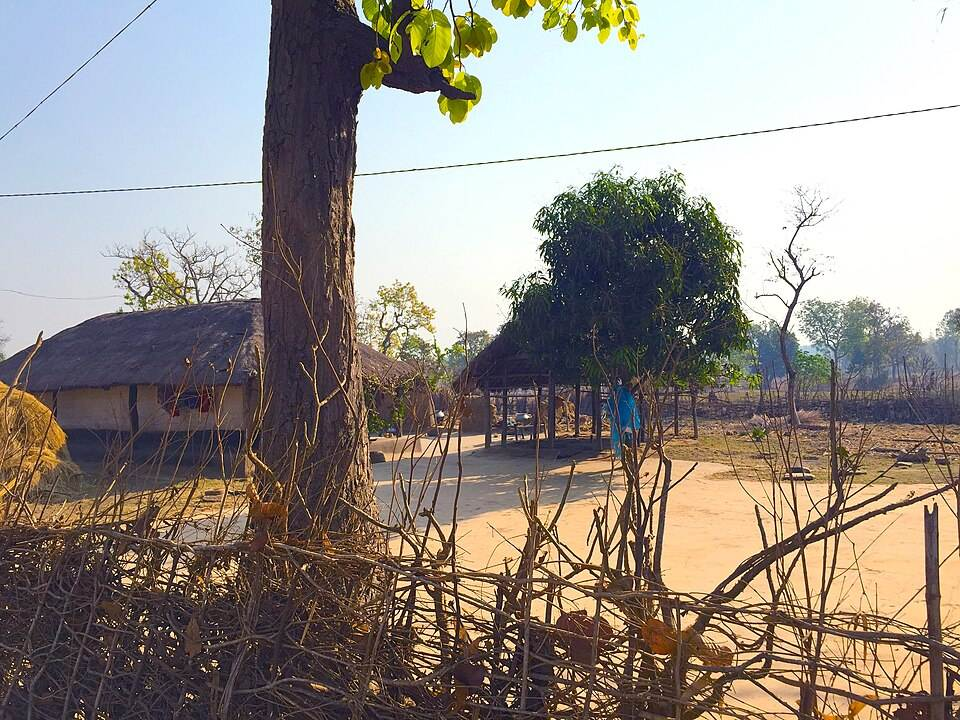
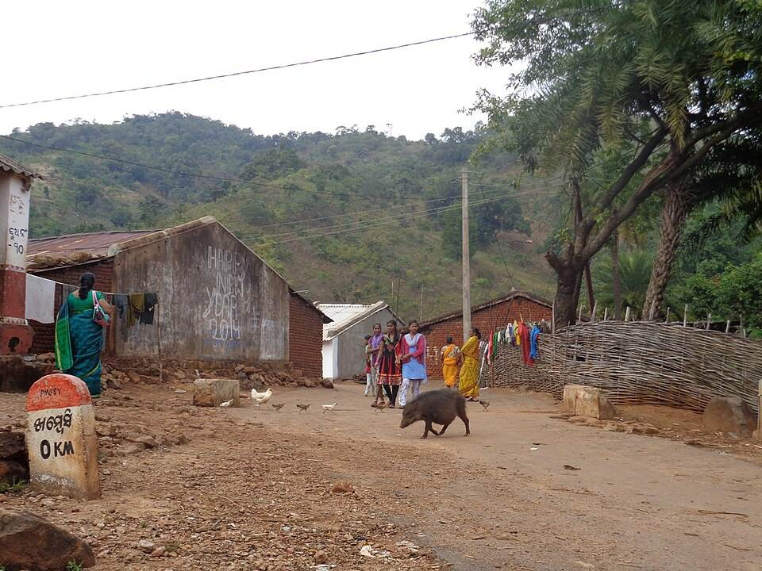

The problem
Odisha’s most beautiful places rarely show up in search results or guidebooks.
With ZipsWay
A curated guide to hidden Odisha
Places sorted by region and season, with photos and tips from people who live there.
Places · Maps · Local guides · Stays — one app
Mangrove creeks, hilltop meadows and painted craft villages that rarely make the guidebooks — with maps, local guides, how to get there and what’s nearby, all in one app.

Why ZipsWay
The problem
Odisha’s most beautiful places rarely show up in search results or guidebooks.
With ZipsWay
Places sorted by region and season, with photos and tips from people who live there.
The problem
Details on transport, food and basics are scattered, or out of date.
With ZipsWay
What to see, how to get there, what to eat, and where the nearest fuel, ATM and hospital are.
The problem
Village homestays, cooks and local drivers can’t reach the travellers looking for them.
With ZipsWay
Homestays, food vendors, guides and drivers list on ZipsWay and are paid straight to their wallet.
All in one place
ZipsWay brings travel information, maps and local guides together, so planning an Odisha trip takes minutes instead of days.
Planning today
With ZipsWay
Hidden Odisha
Tap a pin or a card for what to see, how to get there, what to eat, who can guide you and what’s nearby.
Taste of Odisha
Every destination lists its local dishes, and the homestays and vendors who cook them.

Rice soaked overnight in water, eaten with fried fish, greens and badi. Odisha celebrates it every 20 March.

Lentils simmered with vegetables and finished with cumin and chilli. Everyday food and temple food alike.

Fish in a sharp mustard paste — the signature of the coastal kitchen.

“Burnt cheese”: fresh chhena and sugar, baked until the outside caramelises.

Odisha’s own GI-tagged rasagola. The roadside stalls at Pahala sell it by the pot.
Fried chhena dumplings soaked in syrup, from a small town near Puri.

A tangy, fiery chutney of red weaver ants, made in the villages around Similipal. GI-tagged.
When to go
Birds, turtles, waterfalls and festivals — what’s on, and where to be.
Stay local
Family-run homestays near every destination, booked in the same checkout as your ride.

Courtyard homes in the shade of palms, an easy drive from Chilika, Puri and the delta.

Mud-walled homes kept cool by thick walls and tiled roofs, close to the reserve gates.

High villages in the Eastern Ghats, with terraced fields and weekly markets.
Every homestay is a family home checked by our team, and hosts are paid straight to their ZipsWay wallet.
Local guides
Boatmen, trekkers, forest guides and artist families — booked in the same checkout as your ride and stay.
Dawn boat rides through Chilika’s reed channels and out to the dolphin waters.
Deomali summit walks, village trails and weekly haats in the Eastern Ghats.
Forest drives, creek safaris and gorge boat rides, registered with the forest department where parks require it.
Studio visits with pattachitra painters and palm-leaf engravers, and demonstrations of their work.
Low-tide walks across Chandipur’s flats and along the river mouth, timed to the tides.
Guides complete ID checks before they can take bookings, and every trip is covered by 24/7 support.
Guide with ZipsWayPlan your trip
Add places from the map or the guide, and ZipsWay works out how long to stay, when to go and where to start.
Add places from the map or the guide to start a trip.
Or try a sample trip:
Tourism that stays local
At Mangalajodi, former bird poachers became guides and the wetland recovered. ZipsWay is built to grow more tourism like that.
Homestays, cooks, guides and drivers are paid straight to their ZipsWay wallet.
Offbeat places and season guidance ease the pressure on crowded hotspots.
Park seasons and rules are built into every destination, so trips fit around wildlife.
Ask before photographing people, keep plastic out of forests and lagoons, and follow park rules.
What we measure
How it works
Browse hidden places by region and season, with photos and local tips.
See how to get there, what to eat, and where the nearest fuel, ATM and hospital are.
Book a vehicle — self-drive or with a driver — and a homestay in one checkout.
Set off with the trip tracked live and a local host expecting you.
Getting around
Rent from verified local shops near each destination. Drive yourself, or bring a driver who knows the roads.
Take the wheel yourself, or add a verified local driver who knows the ghat roads. Same search, same checkout.
Women booking with a driver can choose to be matched only with female drivers.
A few hours for a waterfall, or a week across the state. Pick exact pickup and drop-off times.
Where the host offers it, have the vehicle dropped at your hotel or railway station.
Every active trip shows up live on the map, refreshed every few seconds — even on remote roads.
Fare, GST and any extras are itemised before you confirm, and the security deposit is shown separately — it’s refundable.
Example breakdown
+ ₹3,798 refundable deposit, collected at pickup
Add what the trip calls for at checkout.
The ZipsWay Promise
Every host, vehicle and driver is reviewed by our team before they can take a booking — and help is always a tap away.
Homestays and vehicles are checked and approved before they appear in search.
Hosts complete KYC, and drivers submit their licence for review before they can accept rides.
Ask the in-app help assistant, or raise a ticket straight from any booking.
Grow with ZipsWay
Homestay owners, cooks, guides and drivers list directly on ZipsWay. You set the price — we bring the bookings.
FAQ
Anything else? Our support team is in the app, around the clock.
Every host, driver and vehicle on ZipsWay is verified before it can take a booking, trips are tracked live, and support is available 24/7. Women booking with a driver can choose to be matched only with female drivers.
Not everywhere. Coverage is patchy or absent in places like Similipal, the Satkosia gorge and around Deomali. Each destination’s Nearby tab notes the network situation, so you know when to save details ahead and carry cash.
Open a destination and check its Guides tab for the kinds of guide available there, with what they offer and the languages they speak. Add a guide when you book your ride or stay — it’s all one checkout.
Yes. Places you add to a trip stay saved on your device, so you can come back, reorder stops and book when you’re ready.
Pins show roughly where each place is, to help you see how a trip fits together. Use the Getting there tab for stations, airports and road distances, and check routes locally before you set off.
Pick a family-run homestay near your destination and book it in the same checkout as your ride. Meals with the family are usually included, and you pay in the app.
Yes. Add a local guide for treks, boat rides or village walks, or book your vehicle with a driver from a rental shop near the destination.
Several do. Bhitarkanika closes from May to July for crocodile breeding, and Similipal is open from November to mid-June. Each destination lists its season — check locally before you go.
The breakdown lists the base fare, 18% GST, any extras and the delivery fee if you choose doorstep delivery. A refundable security deposit is shown separately and collected at pickup.
The app shows your estimated refund before you confirm. Cancellation charges are set per listing, so check before you book. Once a trip has started it can no longer be refunded.
Find a place, plan the route, book the ride and the stay — all from your phone.